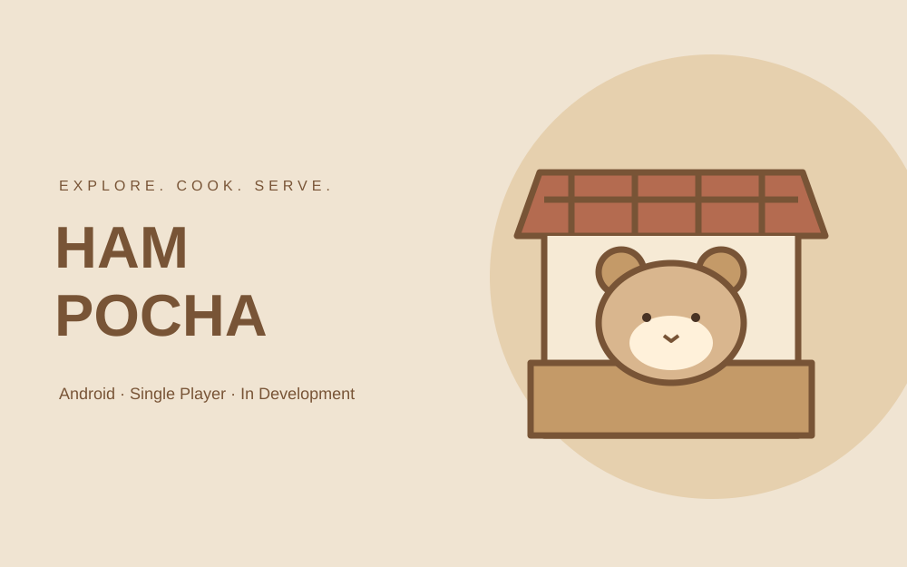

직접 결정
탐험과 영업의 기획
숲에서 재료를 얻고 포장마차에서 요리·판매하는 핵심 루프와 모바일 조작 방향을 결정했습니다.
PROJECT 03 / Ham Pocha
숲에서 재료를 모으고, 작은 포장마차에서 하루를 마무리합니다.
탐험·채집·가벼운 전투와 요리·영업을 연결하는 햄스터 모바일 게임을 개발하고 있습니다.

01 / GAME OVERVIEW
햄스터가 숲을 탐험하며 재료를 얻고, 마을의 포장마차에서 주문에 맞춰 조리하고 음식을 전달하는 솔로 게임입니다.
개발자의 Unity Editor 플레이 검수로 탐험·영업·수면의 핵심 루프 PoC를 확인했습니다.
로컬 저장·성장 기능과 Android 실기기 검증, Firebase 연동은 후속 개발 단계입니다.
02 / GAMEPLAY
플레이 화면 준비 중
03 / MY CONTRIBUTIONS
게임의 방향·규칙·우선순위는 직접 결정하고, AI와 설계·구현·검증을 함께 진행합니다. 아래 내용은 초기 프로토타입의 구성 범위이며 전체 기능의 검증 완료를 의미하지 않습니다.
숲에서 재료를 얻고 포장마차에서 요리·판매하는 핵심 루프와 모바일 조작 방향을 결정했습니다.
이동 입력, 가상 조이스틱, 채집·드롭과 가벼운 전투를 구성하고 있습니다.
주문을 받고 재료를 넣어 조리한 뒤, 가방에서 음식을 골라 손님에게 전달하는 흐름을 구성하고 있습니다.
월드 시계, 피로, 취침과 지역 이동을 연결하고 있습니다. 저장·복원과 전체 성장 흐름은 후속 구현·검증 대상입니다.
04 / CORE SYSTEMS
목표 플레이 흐름
이동·채집과 주문·조리의 입력 및 진행을 나누고, 공통 게임 상태와 연결하는 프로토타입을 구성하고 있습니다.
URP 카툰풍 렌더링과 Input System 기반 입력을 사용합니다. 실제 Android 터치 조작과 성능은 별도 검증이 필요합니다.
게임의 시간, 활동에 따른 피로, 주문과 손님의 진행 속도를 관리하는 구성을 개발 중입니다.
로컬 JSON 저장을 우선 구성하고, Google/Firebase 계정 기반 저장을 도입하는 방향입니다. 클라우드 연동과 세션·보안 검증은 후속 개발 목표이며, 현재 적용 완료로 표시하지 않습니다.
05 / DEVELOPMENT & PROBLEM SOLVING
06 / PROJECT RESOURCES
공개 저장소 준비 중